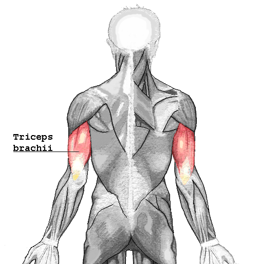

Tríceps
El músculo tríceps es un músculo situado en la región
posterior del brazo. El tríceps es un gran músculo de tres cabezas que abarca el 60% de la masa
muscular del brazo, pero al ser extensor suele ir a favor de la gravedad, y no se desarrolla mucho.

Ejercicios para Tríceps
Extension de codo con polea
- Sujete la barra de la polea con las palmas hacia abajo al ancho de los hombros.
- Párese derecho con una pequeña inclinación hacia adelante. Mantenga la parte superior de sus brazos cerca de su cuerpo y baje lentamente la barra de la polea hasta que sus brazos estén completamente extendidos.
- Haga una pausa cuando esté en la posición contraída del movimiento, luego levante lentamente la barra de la polea hasta el punto de inicio.